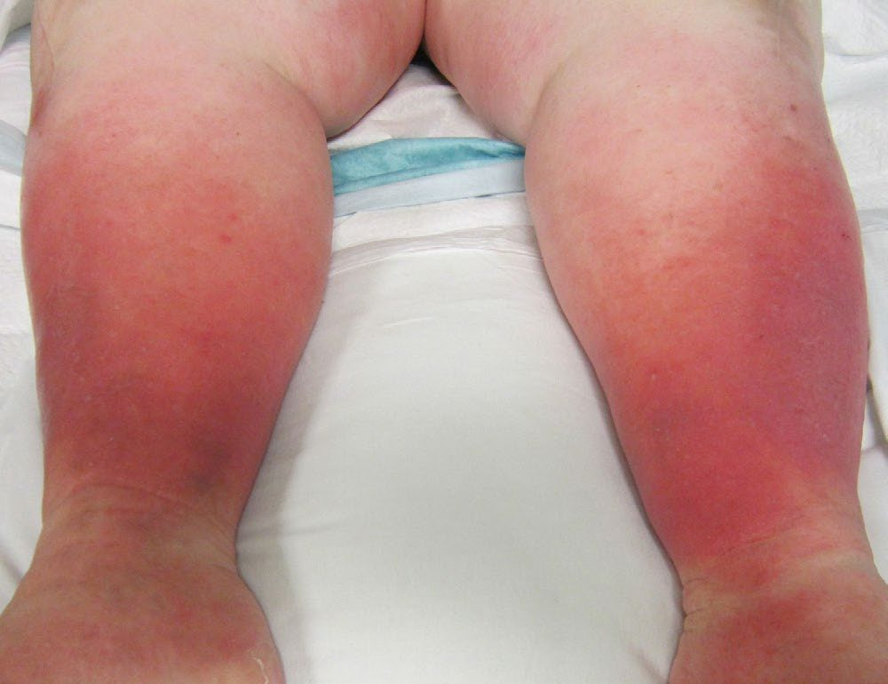
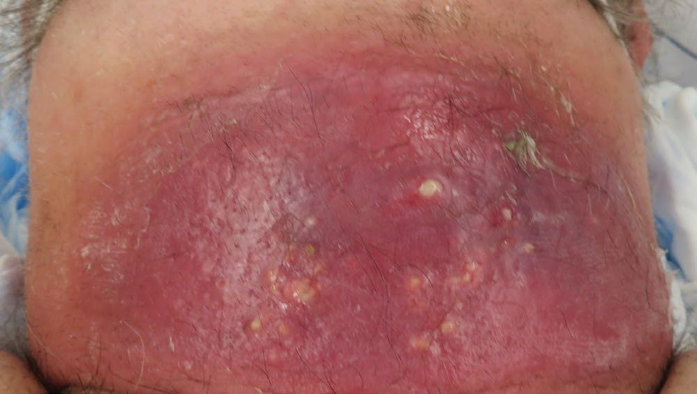
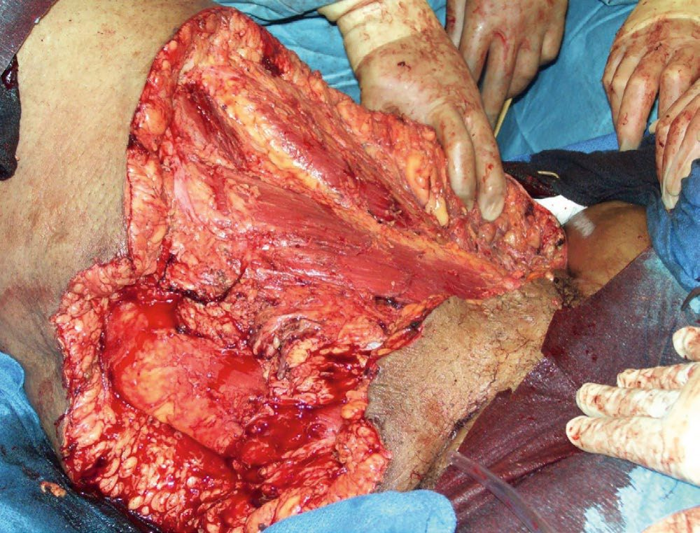
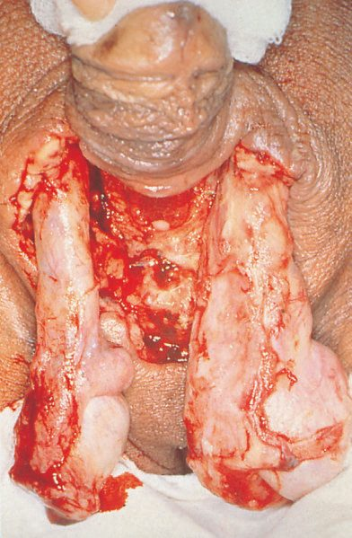

Soft Tissue Infections (Cellulitis/Abscess/Necrotizing Fasciitis)
Summary
- Skin and soft-tissue infections (SSTIs) range from superficial, non-necrotising infections such as impetigo, erysipelas, cellulitis and simple abscess, through to necrotising soft-tissue infections (NSTIs) such as necrotising fasciitis and Fournier's gangrene, which constitute surgical emergencies with high mortality [1].
- Localised or spreading non-necrotising infections usually respond to broad-spectrum antibiotics, whereas localised necrotising infections need surgical debridement in addition to antibiotics, and spreading necrotising soft-tissue infection requires immediate resuscitation, intravenous antibiotics and urgent radical surgical debridement [1].
- The 2018 US FDA classification groups cellulitis, erysipelas, wound infection and major cutaneous abscesses under "acute bacterial skin and skin structure infections" (ABSSSI) [2].
Definition
- An abscess presents the classical features of acute inflammation described by Celsus (calor (heat), rubor (redness), dolor (pain) and tumor (swelling)) and is a localised collection of pus (dead cells, exudate and bacteria) surrounded by granulation tissue [3][4].
- Cellulitis/lymphangitis is a bacterial infection of the skin and subcutaneous tissue that is more generalised than erysipelas, usually associated with broken skin or pre-existing ulceration [1].
- Erysipelas is a sharply demarcated streptococcal infection of the superficial lymphatics, usually on the face, distinguished from cellulitis by its involvement of the upper dermis, clearly demarcated borders and raised skin [1][2].
- Necrotising fasciitis is a rapidly spreading, life-threatening infection resulting from synergistic polymicrobial infection that tracks along the fascial planes [1].
- Necrotising soft tissue infection (NSTI) is an all-inclusive term for any rapidly progressing soft-tissue infection involving any or all layers of the soft-tissue compartment (dermis, subcutaneous tissue, superficial and deep fascia, and muscle) characterised by thrombosis of venules and arterioles leading to ischaemia and necrosis [2].
- Fournier's gangrene is a fulminant form of NSTI involving the perineal, genital or perianal regions [1][2].
Pathophysiology
- Pyogenic organisms, predominantly Staphylococcus aureus, cause tissue necrosis and suppuration; pus is composed of dead and dying neutrophils that have succumbed to bacterial toxins, and an abscess is surrounded by an acute inflammatory response of fibrinous exudate, oedema and inflammatory cells, with granulation tissue (macrophages, fibroblasts, new vessels) forming later and leading to collagen deposition [3].
- Abscesses contain hyperosmolar material that draws in fluid, increasing pressure and causing pain, and tend to track along planes of least resistance towards the skin [3].
- Necrotising fasciitis results from synergistic polymicrobial infection, most commonly group A β-haemolytic Streptococcus combined with Staphylococcus, E. coli, Pseudomonas, Proteus, Bacteroides or Clostridium [1].
- Three types of NSTI are recognised: type I is polymicrobial (gram-positive, gram-negative and anaerobic organisms), most common, and typically affects immunocompromised patients or those with diabetes, renal failure or peripheral vascular disease, with microbial synergy producing a more insidious presentation; type II is monomicrobial, most often group A Streptococcus (toxin-producing strains) or MRSA, producing exotoxins that trigger T-cell activation and a cytokine cascade causing fulminant systemic toxicity without need for synergy, and affects younger, healthier patients after trauma, surgery or IV drug use; type III consists of Vibrio vulnificus or Clostridium species [2].
- Bacterial toxins drive the systemic toxicity: clostridial alpha toxin causes tissue necrosis and cardiovascular collapse; streptococcal/staphylococcal M-proteins, exotoxins A/B/C, streptolysin O and superantigens damage the endothelium, cause microvascular loss of integrity and stimulate CD4 cells and macrophages to release TNF-α, IL-1 and IL-6; Vibrio vulnificus toxins cause iron release, vascular permeability and endothelial apoptosis [2].
Clinical features
- Cellulitis presents as warm, red (usually blanching), oedematous (often pitting) and painful skin, with erythema that may track along lymphatics (lymphangitis); rapidly progressing cellulitis in a systemically unstable patient should raise suspicion of a deeper infection such as necrotising fasciitis [1][5].
- A subcutaneous abscess presents with the four classical signs of Celsus (tumour, rubor, calor, dolor), throbbing pain that gets steadily worse and keeps the patient awake, a mass that may fluctuate once pus has formed, and overlying skin that may whiten then blacken and slough as the abscess points [4].
- Furuncles (boils) begin as a hard, red, tender area that enlarges, becomes fluctuant, and discharges pus and a necrotic core; a carbuncle is a spreading necrotising infection with multiple discharge points where patches of necrotic skin slough, and subcutaneous necrosis is much more extensive than the visible erythema [4].

- Necrotising fasciitis classically shows oedema extending beyond visible erythema, a woody-hard texture of subcutaneous tissue, inability to distinguish fascial planes/muscle groups on palpation, and pain disproportionate to the visible findings, with skin vesicles and soft-tissue crepitus; lymphangitis tends to be absent [1].
- Overlying skin can look deceptively normal in early necrotising fasciitis because infection spreads along fascial planes before progressing from pale red to purple with blister/bullae formation, with thin, grey, foul-smelling ("dishwater") drainage and crepitus [6][7].
- Findings specific to NSTI (crepitus, skin necrosis, and bullae) are present less than 40% of the time and cannot be relied on to exclude the diagnosis [2].
- Up to 71% of NSTIs are misdiagnosed on initial evaluation because presentation can be heterogeneous: infections due to group A Streptococcus, Clostridium and Vibrio present with rapid onset and severe systemic toxicity, whereas polymicrobial NSTI may present indolently with ambiguous symptoms [2].
- Fournier's gangrene presents as a severe infection of the perineal and scrotal region, caused by mixed organisms (gram-positive cocci, gram-negative rods, anaerobes) [6].

Etiology
- The commonest infecting organism in subcutaneous abscess is Staphylococcus aureus, although almost any organism can cause an abscess if local conditions favour growth [4].
- Erysipelas is most commonly caused by group A β-haemolytic streptococci [2].
- Cellulitis is caused by Streptococcus pyogenes and S. aureus [1][5].
- Necrotising soft-tissue infection risk factors include diabetes mellitus, smoking, penetrating trauma, pressure sores, immunosuppression, intravenous drug abuse, perineal infection (perianal abscess, Bartholin's cysts) and skin damage/infection; 80% of patients have a history of previous trauma/infection and over 60% of cases start in the lower extremities [1].
- Predisposing conditions for Fournier's gangrene include diabetes mellitus and immunocompromised state [6][8]. Clostridium perfringens causes necrotic tissue by decreasing oxidation-reduction potential and produces alpha toxin, the major source of morbidity, presenting with myonecrosis and gas gangrene, sometimes after farming injuries [6].
- Risk factors for the milder, non-necrotising SSTIs include obesity, diabetes, fragile skin and pre-existing skin conditions that compromise host defences [2].
Diagnosis
- Diagnosis of simple cellulitis and abscess is largely clinical; routine cultures, tissue aspirates or skin biopsies of cellulitis/erysipelas are not warranted unless the patient is immunocompromised or has systemic illness, because blood cultures are positive in under 5% of cellulitis cases [2].
- Deep abscesses are characterised by swinging fever, rigors and high white cell count/CRP; ultrasound, CT, MRI or isotope studies may be needed to confirm a deep or occult abscess [5].
- The diagnosis of necrotising soft-tissue infection is established on a constellation of clinical findings, not all of which are present in every patient, and no investigation should delay definitive surgical treatment [7][9].
- Plain radiographs or CT may demonstrate subcutaneous gas, though gas is seen in fewer than half of plain films done for NSTI and is detected more readily on CT; MRI has greater sensitivity for fasciitis, myositis and necrosis but should not be obtained if it will delay treatment in an unstable patient [2].
- When the diagnosis is unclear, local exploration with a 2-cm full-thickness elliptical excision (skin, subcutaneous tissue, fascia and muscle) can be performed, inspecting for gross necrosis, purulent "dishwater" fluid, grey discoloration or non-contractile muscle; if equivocal, a full-thickness biopsy with frozen section and Gram stain may help [2].
- The "push" or "finger" test (applying blunt finger pressure to the subcutaneous tissue at the incision margins) suggests NSTI if tissue dissects easily without resistance, indicating the need for wide excisional debridement [2].
- Test incisions can be performed under local or general anaesthesia to inspect the deep fascia directly; "dirty dishwater" fluid in the fascial planes is a positive test [9].
Scoring and Severity
- The Laboratory Risk Indicator for Necrotizing Fasciitis (LRINEC) score uses C-reactive protein (≥150 mg/L = 4 points), white cell count (15–25 = 1 point, >25 = 2 points), haemoglobin (11.0–13.5 g/dL = 1 point, <11 g/dL = 2 points), serum sodium (<135 mmol/L = 2 points), serum creatinine (>1.6 mg/dL = 2 points) and serum glucose (>180 mg/dL = 1 point); a score ≤5 corresponds to <50% probability of NSTI, 6–7 to 50–75% probability, and ≥8 to >75% probability [2].
- The LRINEC score may have useful positive predictive value in cases of clinical uncertainty but should not be relied upon alone for diagnosis, and studies show it lacks sensitivity to reliably rule out NSTI or predict outcomes [2][9].
- Other risk calculators developed for NSTI include the Fournier Gangrene Severity Index (FGSI), the Uludag Fournier Gangrene Severity Index (UFGSI), and the amputation in necrotizing fasciitis (ANF) risk score, though intraoperative findings and clinical judgement should not be replaced by these tools [2].
- A microbiological classification divides NSTI into Type 1 (70–80%, mixed anaerobes/aerobes/Clostridia, indolent presentation), Type 2 (20–30%, monomicrobial group A Streptococcus/S. aureus, rapid deterioration), Type 3 (rare, gram-negative, often marine-related, indolent onset but high mortality) and Type 4 (rare, fungal, in immunocompromised patients, rapid deterioration) [9].
Treatment and Management
- Abscess cavities require incision and drainage and cleaning out, and are traditionally left to heal by secondary intention; when the cavity drains freely there is no need for concurrent antibiotics, but antibiotics should be used if the cavity is closed after drainage [3].
- Simple abscesses in immunocompetent patients are typically treated with incision and drainage without packing, while antibiotics are reserved for immunocompromised patients, multiple abscesses, abscesses >5 cm, abscesses in the face/hand/genitalia, or those failing to improve with drainage alone [2].
- Furuncles and carbuncles are treated with incision and drainage; antibiotics are not routinely required unless there is extensive surrounding cellulitis, and eradicating staphylococcal nasal carriage with mupirocin reduces recurrence of furunculosis by 50% [2].
- Erysipelas is treated with IV benzylpenicillin and flucloxacillin, or oral amoxicillin-clavulanate/cephalexin, for around 5 days, extendable to 10 days for persistent symptoms [2][5].
- Typical (non-purulent) cellulitis is treated with a narrow-spectrum β-lactam effective against streptococci; purulent cellulitis requires incision and drainage, and MRSA coverage should be added if there is no improvement, since vancomycin, though the first-choice anti-MRSA agent, is inferior to β-lactams against methicillin-sensitive S. aureus [2][10].
- Management of necrotising soft-tissue infection begins with urgent fluid resuscitation, haemodynamic monitoring and high-dose intravenous broad-spectrum antibiotics; this is a surgical emergency and the diseased area should be debrided as soon as possible until viable, bleeding tissue is reached, with early surgical review, repeat debridement, vacuum-assisted dressings and, where available, hyperbaric oxygen therapy after debridement [1].
- Surgery within 6 hours of diagnosis has been shown to lower mortality by 50%, and even a 1- to 2-cm rim of normal-appearing tissue may be excised to secure margins; limb amputation may be necessary to achieve healthy margins in extremity NSTI [2].
- Empiric antibiotic therapy for NSTI combines a broad-spectrum β-lactam (e.g. piperacillin-tazobactam) with an anti-MRSA agent (vancomycin, linezolid or daptomycin); clindamycin is added for its toxin-neutralising properties against streptococcal and clostridial species, and the SIS/IDSA guidelines strongly recommend combination penicillin plus clindamycin for group A streptococcal NSTI [2].
- For monomicrobial group A streptococcal or clostridial NSTI, high-dose penicillin is recommended [6].
- Intravenous immunoglobulin has been proposed to neutralise superantigen-mediated toxic shock but randomised trials failed to show benefit and it is now rarely used [2].
- For Fournier's gangrene, treatment is early debridement with an attempt to preserve the testicles where possible, plus antibiotics [6].
- The UK antimicrobial guideline for cellulitis and erysipelas opens with a diagnostic instruction rather than a drug, and it is the step most often skipped.
- To ensure these are treated appropriately, exclude other causes of skin redness such as an inflammatory reaction to an immunisation or an insect bite, or a non-infectious cause such as chronic venous insufficiency [11].
- Before treating, consider drawing around the extent of the infection with a single-use surgical marker pen to monitor progress, being aware that redness may be less visible on darker skin tones [11].
- Swabbing is the exception, not the routine.
- Consider a swab for microbiological testing only if the skin is broken and there is a penetrating injury, or there has been exposure to water-borne organisms, or the infection was acquired outside the UK [11].
- Those same three circumstances reappear later as reasons to seek specialist advice, so they are worth learning as a set [11].
- Antibiotic choice takes account of the severity of symptoms, the site of infection, for example near the eyes or nose, the risk of uncommon pathogens, previous microbiological results, and known MRSA status [11].
- Give oral antibiotics first line if the person can take them and severity does not require intravenous treatment; if intravenous antibiotics are given, review by 48 hours and consider switching to oral [11].
- Manage any predisposing condition, for example diabetes, venous insufficiency, eczema, or oedema, which may itself be an adverse effect of medicines such as calcium channel blockers [11].
The antibiotic table for adults turns on one anatomical distinction.
| Situation | Antibiotic and course |
|---|---|
| First choice | Flucloxacillin 500 mg to 1 g four times a day orally, or 1 g to 2 g four times a day intravenously, for 5 to 7 days |
| First choice alternatives for penicillin allergy or if flucloxacillin unsuitable | Clarithromycin 500 mg twice a day; erythromycin 500 mg four times a day in pregnancy; doxycycline 200 mg on day 1 then 100 mg once a day |
| Infection near the eyes or nose | Co-amoxiclav 500/125 mg three times a day orally or 1.2 g three times a day intravenously for 7 days; consider seeking specialist advice |
| Near the eyes or nose, penicillin allergy | Clarithromycin with metronidazole, 7 days |
| Severe infection | Co-amoxiclav, cefuroxime, clindamycin, or ceftriaxone (ambulatory care only), 7 days |
| MRSA suspected or confirmed | Add vancomycin, teicoplanin, or linezolid (specialist use only, if vancomycin or teicoplanin cannot be used) to one of the above |
- Table reformats the NG141 adult antibiotic recommendations [11].
- The reason the periorbital and nasal triangle gets its own row is stated plainly: infection around the eyes, or in the triangle from the bridge of the nose to the corners of the mouth, is of more concern because of the risk of a serious intracranial complication [11].
- Two further notes: a longer course of up to 14 days in total may be needed on clinical assessment, and full resolution of symptoms at 5 to 7 days is not expected because skin takes time to return to normal [11].
- Reassessment has a defined trigger and a defined differential.
- Reassess if symptoms worsen rapidly or significantly at any time, do not start to improve within 2 to 3 days, or the person becomes systemically very unwell, has severe pain out of proportion to the infection, or has redness or swelling spreading beyond the initial presentation [11].
- On reassessment, consider other diagnoses, namely an inflammatory reaction to an immunisation or insect bite, gout, superficial thrombophlebitis, eczema, allergic dermatitis or deep vein thrombosis, and look for signs of a more serious condition: lymphangitis, orbital cellulitis, osteomyelitis, septic arthritis, necrotising fasciitis or sepsis [11].
- That second list is the referral trigger: refer to hospital if any of them is suspected [11].
- Prophylaxis is restricted and time-limited. Do not routinely offer antibiotic prophylaxis to prevent recurrent cellulitis or erysipelas [11].
- Only for adults who have had treatment in hospital, or under specialist advice, for at least 2 separate episodes in the previous 12 months may specialists consider a trial, as a shared decision weighing severity and frequency, complication risk, underlying conditions, the risk of resistance with long-term antibiotic use, and the person's preference [11].
- Prophylaxis is reviewed at least every 6 months, and is stopped or changed if cellulitis recurs [11].
- The regimens are phenoxymethylpenicillin 250 mg orally twice a day, or erythromycin 250 mg orally twice a day in penicillin allergy, choosing according to recent microbiological results where possible and avoiding using the same antibiotic for treatment and prophylaxis [11].
An infected leg ulcer is governed by a separate guideline from cellulitis, and its central message is that most leg ulcers should not be swabbed or treated with antibiotics at all. Be aware that there are many causes of leg ulcers and that underlying conditions such as venous insufficiency and oedema should be managed to promote healing; that most leg ulcers are not clinically infected but are likely to be colonised with bacteria; and that antibiotics do not help to promote healing when a leg ulcer is not clinically infected [12].
- Two instructions follow directly from that. Do not take a sample for microbiological testing from a leg ulcer at initial presentation, even if it might be infected [12].
- And only offer an antibiotic when there are symptoms or signs of infection, for example redness or swelling spreading beyond the ulcer, localised warmth, increased pain or fever, taking account of the severity of those signs, the risk of complications, and previous antibiotic use [12].
- Sampling is deferred, not abandoned: consider sending a sample after cleaning if symptoms or signs are worsening or have not improved as expected, then review and narrow the antibiotic when results arrive [12].
The expectations set for the patient differ from cellulitis in one respect worth noting: it will take some time for a leg ulcer infection to resolve, with full resolution not expected until after the antibiotic course is completed [12]. The reassessment triggers are otherwise the familiar pair, worsening rapidly or significantly at any time or failing to improve within 2 to 3 days, plus becoming systemically unwell or severe pain out of proportion to the infection [12].
- The referral triggers are the ones that matter surgically.
- Refer to hospital for any symptoms or signs suggesting a more serious illness such as sepsis, necrotising fasciitis or osteomyelitis [12].
- Consider referral or specialist advice for a higher risk of complications from comorbidities such as diabetes or immunosuppression, for lymphangitis, for spreading infection not responding to oral antibiotics, or where oral antibiotics cannot be taken, exploring intravenous or intramuscular options at home or in the community first where appropriate [12].
- First-choice oral treatment is flucloxacillin [12].
- There is no NICE guideline on necrotising fasciitis itself.
- It appears in the NICE corpus only as a referral trigger inside the cellulitis and leg-ulcer antimicrobial guidelines, where suspicion of it mandates hospital referral [11][12].
- Management of established necrotising soft tissue infection in the UK therefore follows the surgical principles set out from the textbook sources above rather than a national guideline, and the documented absence is itself worth knowing.
Surgeries
- Incision and drainage is the definitive surgical treatment for simple cutaneous and subcutaneous abscesses, furuncles and carbuncles [2][4].
- A perianal abscess can be incised and drained, the walls curetted and the skin closed with appropriate antibiotic cover, whereas a pilonidal abscess has a higher recurrence risk after primary closure because a nidus of hair may remain in the adjacent subcutaneous tissue [3].
- For necrotising fasciitis/NSTI, radical surgical debridement of all necrotic and infected tissue is the mainstay of treatment, with a generous incision extended as needed for complete visualisation, sharp removal of even questionable tissue, and interval re-debridement in the ICU until no further necrosis is found [1][2].
- Skin-sparing approaches with wide undermining may be used if the overlying skin is uninvolved, to improve later reconstructive outcomes, but amputation may be required for extremity NSTI to achieve healthy margins [2].
- In established gas gangrene with systemic toxicity, amputation of the affected limb may be required [13].

Complications
- Abscesses that are not drained or resorbed completely may become chronic; if partly sterilised with empirical antibiotics an "antibioma" can form [3].
- A large abscess can cause considerable systemic disturbance, with the patient appearing pale and ill, sweating, and having rigors and episodes of flushing with elevated temperature and pulse [4].
- Necrotising fasciitis and other NSTIs are characterised by rapid progression, tissue necrosis and high rates of sepsis and septic shock; the reported mortality is 30–50% even with prompt operative intervention [1].
- The Oxford Handbook quotes an overall mortality of 20–25% for necrotising soft-tissue infections, while a Schwartz's ABSITE question notes a mortality of up to 67% specifically for Fournier's gangrene [8][9].
- Complications of NSTI management itself include the need for repeated debridements and, in extremity disease, amputation to achieve source control [2].

Prognosis
- Simple cellulitis, erysipelas and drained abscesses generally resolve well with appropriate antibiotics and source control, usually within 5–10 days of treatment [2].
- Necrotising fasciitis and other NSTIs carry a high mortality of 30–50% even with prompt treatment, reflecting the surgical-emergency nature of the disease and the importance of early diagnosis and debridement [1].
- Delay in surgical debridement worsens outcome: surgery within 6 hours of diagnosis has been shown to reduce mortality by half compared with delayed intervention [2].
- Fournier's gangrene prognosis is influenced by the degree of delay in diagnosis and the extent of perineal/genital tissue loss, with mortality reported as high as 67% in some series despite prompt debridement and antibiotics [8].
References
- Bailey & Love's Short Practice of Surgery, 28th ed., Ch. 45 Skin and subcutaneous tissue
- Sabiston Textbook of Surgery, 22nd ed., Ch. 35 Primary Soft Tissue Infections
- Bailey & Love's Short Practice of Surgery, 28th ed., Ch. 5 Surgical infection
- Browse's Introduction to the Symptoms and Signs of Surgical Disease, 6th ed., Ch. 4 The skin and subcutaneous tissues
- Oxford Handbook of Clinical Surgery, 5th ed., Ch. 3 Surgical pathology
- The ABSITE Review, 2022, Ch. 5 Infection
- Schwartz's Principles of Surgery: ABSITE and Board Review, Ch. 6 Surgical Infection
- Schwartz's Principles of Surgery: ABSITE and Board Review, Ch. 40 Urology, cites perirectal abscesses, diabetes, obesity and chronic alcoholism
- Oxford Handbook of Clinical Surgery, 5th ed., Ch. 17 Plastic surgery
- Schwartz's Principles of Surgery: ABSITE and Board Review, Ch. 16 The Skin and Subcutaneous Tissue
- NICE Guideline NG141: Cellulitis and erysipelas: antimicrobial prescribing. National Institute for Health and Care Excellence, London, UK, 2019., 1.1.1; 1.1.2; 1.1.3; 1.1.4; 1.1.5; 1.1.6; 1.1.7; 1.1.9; 1.1.10; 1.1.13; 1.1.14; 1.2.1, Table 1; 1.3.1; 1.3.2; 1.3.5; 1.4.1, Table 3 www.nice.org.uk
- NICE Guideline NG152: Leg ulcer infection: antimicrobial prescribing. National Institute for Health and Care Excellence, London, UK, 2020., 1.1.1; 1.1.2; 1.1.3; 1.1.7; 1.1.9; 1.1.10; 1.1.11; 1.1.12; 1.1.13; 1.2.1, Table 1 www.nice.org.uk
- Bailey & Love's Short Practice of Surgery, 28th ed., Ch. 33